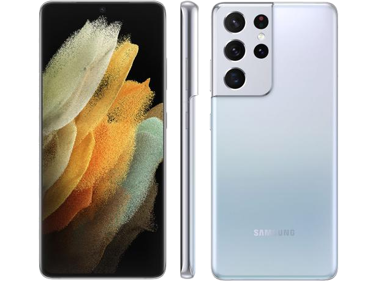

Tudo começou na Coreia do Sul, mais precisamente em 1938. Com 28 anos, o empresário Byung-Chull Lee já acumulava investimentos em plantações de arroz e muitos estudos em economia, mas resolveu abrir com verba bem limitada uma tal de Samsung Trading Company na cidade de Daegu.
Você não encontrava eletrônicos por lá: ela era uma pequena loja de importação e exportação de produtos como peixe desidratado, vegetais e macarrão. O nome vem dos caracteres coreanos "Sam", que significa três, e "Sung", que é estrela. O numeral no país significa “grande, vasto e forte”, e esses deveriam ser os pilares da empresa. As logos da Samsung tinham as três estrelas até 1993, quando foi criado o famoso símbolo com o emblema em azul.
Em dez anos, a Samsung Trading Company se tornou uma das maiores empresas do setor no país, dona de moinhos e fábricas próprias. Tecido, açúcar e algodão eram alguns dos principais produtos dela nessa época.
Extraordinário em cada detalhe
Apresentando o Galaxy S21 Ultra 5G. Projetado com uma exclusiva câmera com corte de contorno para revolucionar a fotografia, permitindo que você grave vídeos cinematográficos em 8K e tire fotos épicas, tudo de uma só vez. Com o circuito mais rápido do Galaxy, o vidro mais forte, 5G e uma bateria que dura o dia todo, o Ultra faz jus ao seu nome com facilidade.
